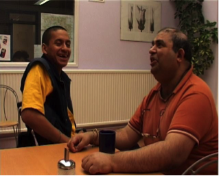
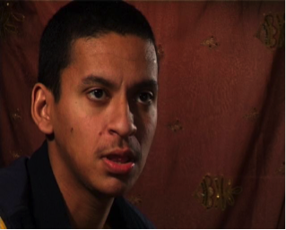
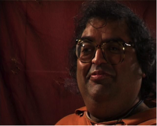

PRODUCTION-BASED TRAINING PROGRAMMES WITH OUR TARGET GROUPS
With this strand we wanted to highlight the experiences and concerns of under-represented communities. We worked on projects where mothers, older people and adults with learning disabilities gained video skills and produced new work.
Young Mothers Speak Out
Why Me? (19'51") was made by local mothers on a year-long production-based documentary course. Funded by The Art's Council's Lottery Scheme, Arts For Everyone, Why Me? was screened at the Curzon, Soho in June 2000 to an audience that included industry producers and a commissioning editor from Channel 4.
None of the participants had had the chance to take part in education and training for some years. We were able to help with locating and organising suitable childcare and paying childcare costs.
>> Why Me? (shot and edited on S-VHS)
Under the film
"The big plus - the help with childcare and travel. Without it, I'd never have had this opportunity. It's manageable, 2 days out of the house."
Forward From Fifty
Members of Open Age produced a documentary, "Forward from Fifty, which explored attitudes to retirement and the advantages it can bring.
"I looked forward to every moment. The tutors were good teachers, it gave me such confidence. They let us do things for ourselves and when we made mistakes, gently got us back on course again. It has been a most enjoyable time of learning - I've done something I would never have thought possible" - 61 year old woman
Under the film
“The most memorable times were our shared experiences, the final editing session and the subsequent viewing in a cinema setting"74 year old woman
ZOOMIN VIDEO
“The rate of learning among these students has far exceeded our expectations”
A partnership with Ealing Social Firms Development Project, through which people with physical and learning disabilities joined year long, OCN-accredited courses. Students produced ads, a music video, dramas and a documentary from a young Sikh man with cerebral palsy who investigated his religion's attitude to disability.
  